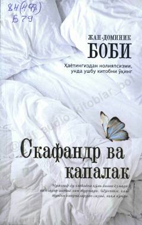

СВFalajlikka qaramay, iroda kuchi bilan yozilgan ta'sirli avtobiografik asar.
Ushbu asar fransuz dramaturgi Jan-Dominik Bobining o'z hayotiy tajribasiga asoslangan bo'lib, u to'satdan falaj bo'lib qolganidan so'ng faqat chap ko'zi yordamida butun bir kitobni qanday yozganini hikoya qiladi. Muallif o'zining jismoniy cheklovlarini 'skafandr', ruhini esa 'kapalak' deb atab, inson irodasi va matonatining yuksak namunasini ko'rsatib beradi.